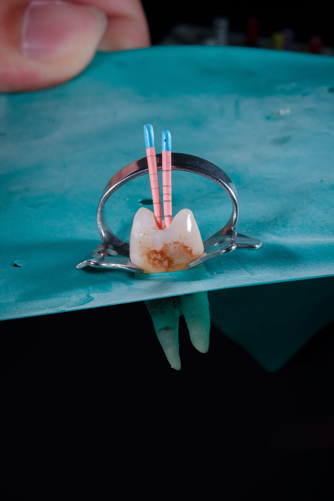
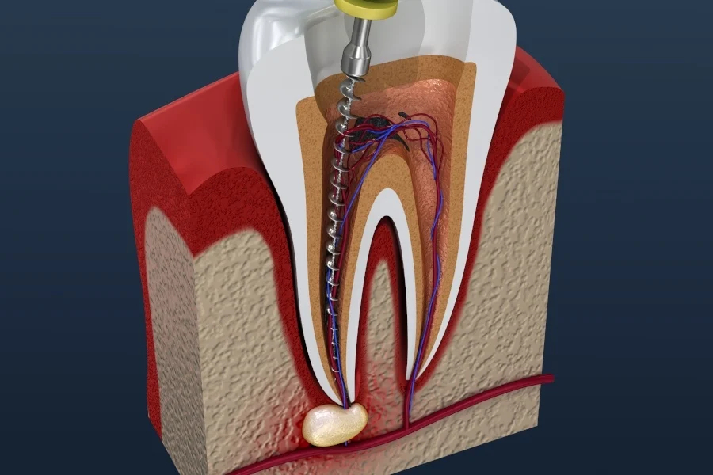
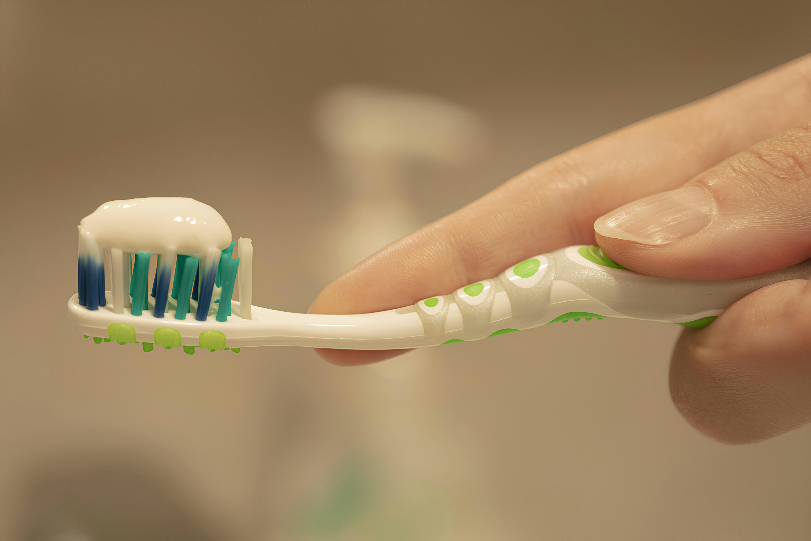

★★★★★
"I was terrified of getting a root canal, but there was genuinely no pain. Dr Deepesh explained every step and my toothache was gone the same day."
Tooth-Saving Treatment
A gentle, painless way to save an infected or badly decayed tooth — relieving your pain and keeping your natural smile intact.


A root canal treatment (RCT) removes infected or inflamed tissue from inside a tooth, then cleans, disinfects, and seals it — saving a tooth that would otherwise need to be removed.
Deep inside each tooth is a soft core called the pulp, which contains nerves and blood vessels. When decay, a crack, or injury lets bacteria reach the pulp, it becomes infected — causing pain, swelling, and sensitivity.
During a root canal, this damaged pulp is carefully removed and the empty canals are filled and sealed. The tooth is then restored with a filling or crown, allowing you to keep your natural tooth and bite for years to come.
An infected tooth won't heal on its own. Left untreated, the infection can spread and lead to more serious problems:
When a tooth is badly infected, the two main options are saving it with a root canal or removing it. Here's how they compare:
| Feature | Tooth Extraction | Root Canal |
|---|---|---|
| Natural tooth | The tooth is removed completely | Your own natural tooth is saved and preserved |
| Bite & chewing | Leaves a gap that can affect chewing and alignment | Keeps your bite and chewing function intact |
| Follow-up needed | Usually needs an implant or bridge to fill the gap | Restored with a simple filling or crown |
| Jawbone health | Bone can shrink where the tooth is missing | The natural root keeps the jawbone stimulated |
| Overall cost | Extraction is cheaper, but replacement adds up | Often better long-term value than removal plus replacement |
Saving a natural tooth is almost always the preferred option. During your consultation, Dr Deepesh Agrawal will confirm whether a root canal is right for your tooth.
Modern root canal treatment is comfortable and usually completed in one or two visits. Watch the short walkthrough below, then read what to expect at each stage.
A step-by-step look at how a root canal saves an infected tooth.
Dr Agrawal examines the tooth and takes a digital X-ray to see the shape of the root canals and the extent of the infection. This confirms whether a root canal is the right treatment.
The tooth and surrounding area are then numbed with local anaesthesia, so the entire procedure is comfortable and essentially painless.
A small opening is made in the top of the tooth to reach the pulp chamber. The infected or inflamed pulp is carefully removed from inside the tooth and its canals.
This step relieves the pressure and pain caused by the infection almost immediately.
Using precise rotary instruments, the canals are thoroughly cleaned, disinfected, and shaped. This removes all remaining bacteria and prepares the tooth to be sealed.
Our modern rotary endodontics makes this stage faster, more accurate, and more comfortable.
The cleaned canals are filled with a safe, biocompatible material and sealed to prevent bacteria from re-entering. A temporary or permanent filling closes the opening in the tooth.
This locks out infection and restores the tooth's structure from the inside.
Because a treated tooth can become brittle, it's usually protected with a crown or a strong permanent filling. This restores full strength, function, and appearance.
Once restored, your tooth looks and works just like a healthy natural tooth — and your treatment is complete.

A treated tooth can last a lifetime with the right care. A few simple habits help it heal and stay strong:
₹4,000 – ₹6,000
The cost of a root canal depends on which tooth is affected (front teeth have fewer canals than molars), the complexity of the infection, and the type of final restoration — a filling or a crown. Because every case is different, we provide an itemised, no-obligation quote after your consultation.
Saving your natural tooth is often far better value than extraction followed by an implant or bridge. Ask us about flexible payment options during your visit.
Prices are indicative and confirmed only after an in-person examination.
"I was terrified of getting a root canal, but there was genuinely no pain. Dr Deepesh explained every step and my toothache was gone the same day."
"Quick and completely painless treatment for my molar. The clinic is very clean and modern. I could eat normally within a couple of days."
"Saved my front tooth after an old injury. The result looks completely natural and the pricing was clear from the start. Highly recommended."
No. The procedure is carried out under local anaesthesia, so it feels much like having a routine filling. Most patients are surprised at how comfortable it is, and it actually relieves the pain caused by the infection.
Many root canals are completed in a single visit, while more complex cases may need two. Dr Agrawal will let you know what to expect after examining your tooth.
With a proper restoration and good oral hygiene, a root-canal-treated tooth can last a lifetime. Protecting it with a crown greatly improves its longevity.
A treated tooth can become more brittle over time. A crown protects it from cracking and restores full chewing strength, especially for back teeth.
The infection will worsen, potentially causing an abscess, spreading to other areas, and ultimately leading to loss of the tooth. Timely treatment is the safest option.
Yes. Local anaesthesia wears off within a few hours and does not affect your ability to drive or return to normal activities the same day.
Book a consultation with Dr Deepesh Agrawal to find relief from tooth pain and save your natural tooth — with a clear, personalised treatment plan and quote.
Malviya Dental Assistant
Powered by AI